Styling for Someone Else · 短篇 galgame CG 故事（R18）
你是那个「替别人准备重要一天」的人。她替无数人挑好赴约的衣服，却从来没人替她挑过一次。
而今天，全世界只有她还不知道——那个「别人」就是她自己。
| 角色 | 视觉 | 在这个故事里 |
|---|---|---|
| 堇 | 靛蓝色及肩波浪发、一侧小丸子、白色小花发饰、蓝紫眼；白泡泡袖衬衫 + 蓝色牛仔背带裙（裙摆天蓝→薄荷绿渐变）；蓝色蝴蝶结玛丽珍高跟 | 搭配师，小工作室在旧街二楼。慢热、克制，把关心放在细节里。口头禅「你抬手，我看看肩线」既是职业台词，也是她挡住情绪的方式 |
| 暖暖 | 浅粉色及腰直发、发尾微卷、暖棕眼；白色罗纹针织毛衣 + 淡粉格纹背带裙，胸口红丝带；裙摆一圈印着 POETRY BLOOM | 老客。三年前第一次进门就让堇改了裙长，从此只找堇做衣服。叫堇「堇姐」。紧张时会去摸裙摆上那行字 |
| 你 | 不出现 | 由玩家扮演。全程知道两条线要见的是同一个人 |
约的是四点。她比我早到，门已经开了。里屋有人在哼歌。
旧街二楼的木楼梯尽头，她站在门里侧，手还搭在门把上——她没有先说话，先看的是我的肩。
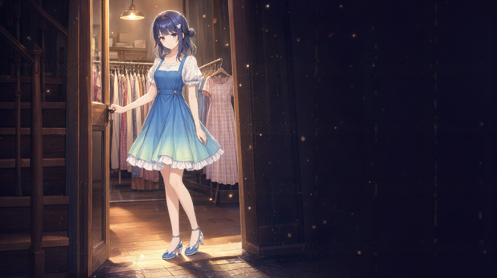
D:\workspace\dsh-default\qwen-image-2.1-tools\exp\galgame-cg-20260928\story\01-entrance.pngexp/galgame-cg-20260928/story/01-entrance.pngC:\Users\ashsu\Documents\black\gallery\story\01-entrance.png/gallery/story/01-entrance.png门框、衣架、里屋那件粉裙的钩子都在（她是主角，但第一眼先给钩子）。
她绕到我身后，布尺从肩上过去。她的手很稳，眼神只在肩线上——不看人。
然后停了一下。很短，短到可以当成是她在读数。
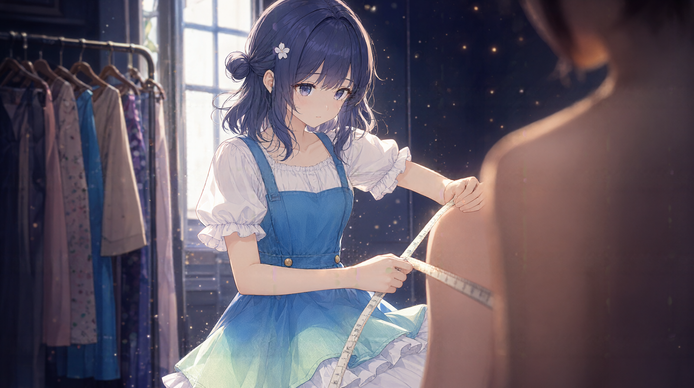
D:\workspace\dsh-default\qwen-image-2.1-tools\exp\galgame-cg-20260928\story\02-measure.pngexp/galgame-cg-20260928/story/02-measure.pngC:\Users\ashsu\Documents\black\gallery\story\02-measure.png/gallery/story/02-measure.png全篇最好的一张。改成单人视角才成立：客人只出现肩与后颈、还虚焦，主体是她的手与布尺。第一版要求「两人都在画面里」，模型给同一个人画了两个副本。另：客人没画上衣，按确认保留原样。
她放下尺，笔尖停在记事本上。
她的表情没有变，但眼睛变了一瞬。
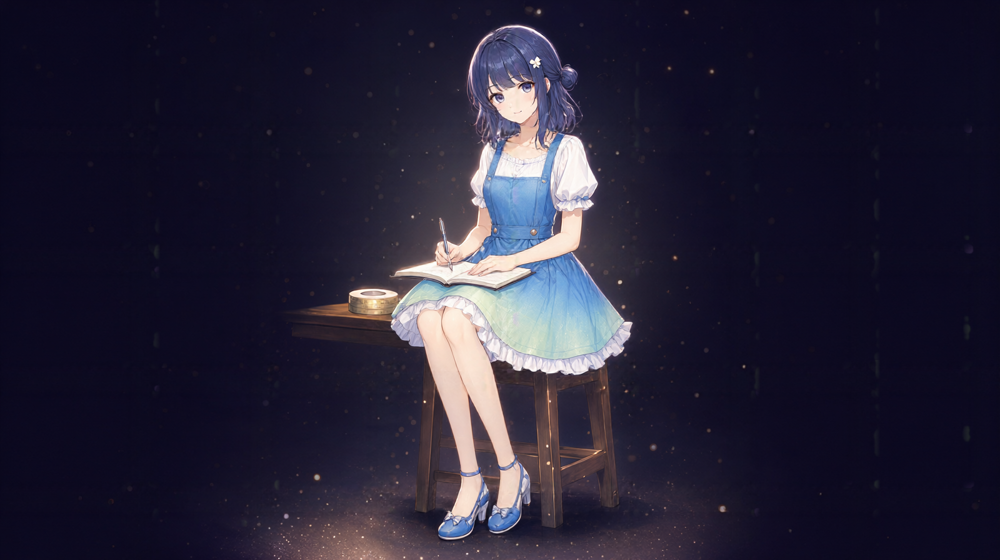
D:\workspace\dsh-default\qwen-image-2.1-tools\exp\galgame-cg-20260928\story\03-the-question.pngexp/galgame-cg-20260928/story/03-the-question.pngC:\Users\ashsu\Documents\black\gallery\story\03-the-question.png/gallery/story/03-the-question.png抬眼 + 笔停在记事本上的动作都对。
她替我把衬衫最上面那颗扣子解开。指尖停在第二颗上，没有往下。
她抬眼看我。离得很近。
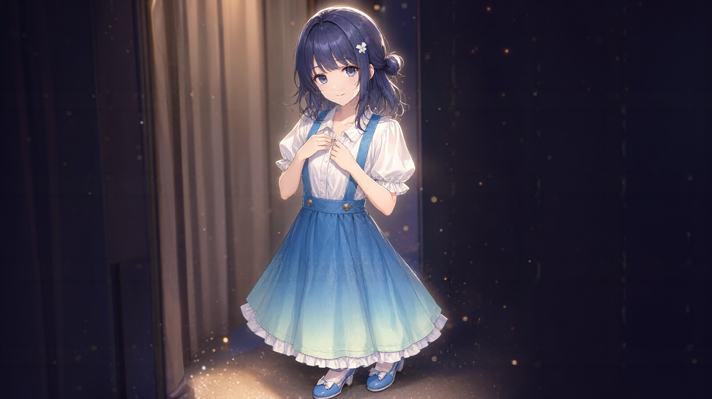
D:\workspace\dsh-default\qwen-image-2.1-tools\exp\galgame-cg-20260928\story\04-unbutton.pngexp/galgame-cg-20260928/story/04-unbutton.pngC:\Users\ashsu\Documents\black\gallery\story\04-unbutton.png/gallery/story/04-unbutton.png本机做不到这一幕。 唯一内容是「她的手停在另一个人的衬衫上」，即「与另一个人发生的动作」：出图画成她在扣自己的衬衫并对镜头笑；后期 edit 也完全没改成功。详见 STORY-GEN-REPORT.md 第四节，那里写了换模型时要验的三件事与两个备选构图。
窗边小圆桌。她双手捧着冰茶杯，斜前方放着一块草莓蛋糕。
她手机亮了一下，她看了一眼，没回。
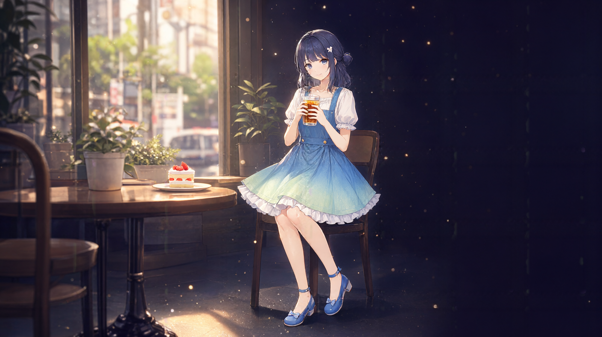
D:\workspace\dsh-default\qwen-image-2.1-tools\exp\galgame-cg-20260928\fixed-2\story-02-cafe.pngexp/galgame-cg-20260928/fixed-2/story-02-cafe.pngC:\Users\ashsu\Documents\black\gallery\fixed-2\story-02-cafe.png/gallery/fixed-2/story-02-cafe.png用修复版（首版只画了单手，要求「双手捧杯」）。场上还没出现第二个人，但台词已经在替她准备。
沿街走。她拎着纸袋，回头看我，嘴角有一点笑。
她自己大概没意识到。
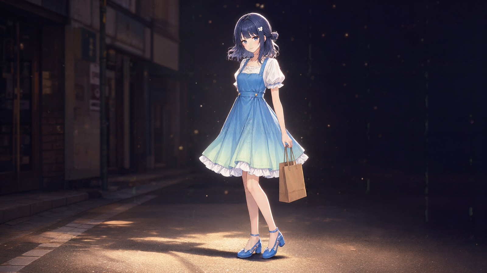
D:\workspace\dsh-default\qwen-image-2.1-tools\exp\galgame-cg-20260928\fixed-2\story-03-street.pngexp/galgame-cg-20260928/fixed-2/story-03-street.pngC:\Users\ashsu\Documents\black\gallery\fixed-2\story-03-street.png/gallery/fixed-2/story-03-street.png用修复版（首版四指与提绳焊在一起、鞋跟成玻璃块）。
海港步道。她一手甜筒、一手纸巾，风把头发吹起来。
太阳低下去的时候，她忽然不说话了。
D:\workspace\dsh-default\qwen-image-2.1-tools\exp\galgame-cg-20260928\story\07a-icecream.pngexp/galgame-cg-20260928/story/07a-icecream.pngC:\Users\ashsu\Documents\black\gallery\story\07a-icecream.png/gallery/story/07a-icecream.png重出（不是 edit）。真正的黄金时刻：太阳低垂、海面拖出长条金色反光、投影朝镜头拉长。旧版是正午强光，与「午后咖啡厅」之后不连续。⚠️ 不要用同名的 edit 版（它没做出黄金时刻，还把整张重画了）。
回工作室。暖暖已经在里面等着了，见我进来也不避，「你就是堇姐说的那个人？」，说完自己先笑了。
堇替她张开手臂量体。我在旁边看着——两个人各自为了同一个人认真准备。
而我全程知道，她们俩都不知道。
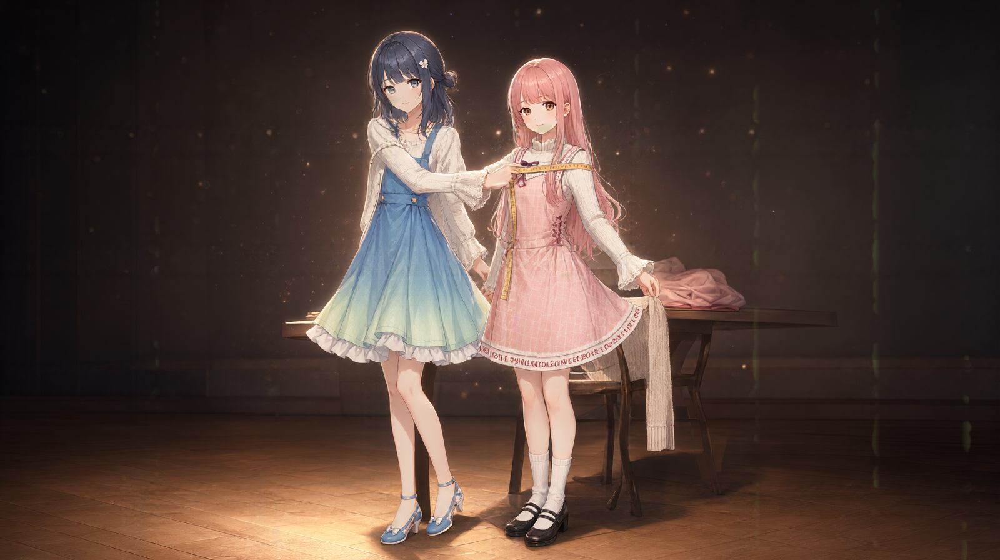
D:\workspace\dsh-default\qwen-image-2.1-tools\exp\galgame-cg-20260928\story\07b-three-fitting.pngexp/galgame-cg-20260928/story/07b-three-fitting.pngC:\Users\ashsu\Documents\black\gallery\story\07b-three-fitting.png/gallery/story/07b-three-fitting.png全篇最酸的一场，也是唯一证实「两个角色能同框而不串味」的一张。 第一版画成两组人 + 地板整块星座连线；改成把「不要」写成「要什么」（正面描述背景）+ 把不重复禁在画法层之后成立。蓝发与粉发一眼分得开。
秋日公园。她坐在长凳上，腿垂在凳前，抬头看落下的叶子。
她手里还握着半卷布尺——暖暖那件剩下的。
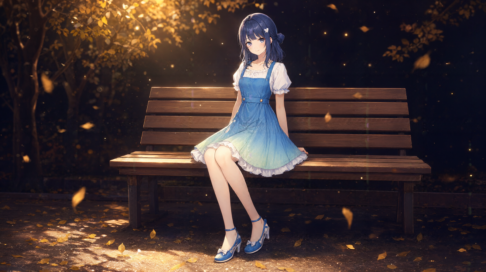
D:\workspace\dsh-default\qwen-image-2.1-tools\exp\galgame-cg-20260928\fixed-2\story-05-park.pngexp/galgame-cg-20260928/fixed-2/story-05-park.pngC:\Users\ashsu\Documents\black\gallery\fixed-2\story-05-park.png/gallery/fixed-2/story-05-park.png用修复版（首版臀腿悬在座面前方，承重关系不成立）。
她靠在桥栏上看河面。说完那句话之后，侧脸没有转回来。
D:\workspace\dsh-default\qwen-image-2.1-tools\exp\galgame-cg-20260928\fixed-2\story-06-sunset-bridge.pngexp/galgame-cg-20260928/fixed-2/story-06-sunset-bridge.pngC:\Users\ashsu\Documents\black\gallery\fixed-2\story-06-sunset-bridge.png/gallery/fixed-2/story-06-sunset-bridge.png用修复版（首版是 P0：同一个人被画了两次）。
夜里只剩一盏台灯。她背对着我，一侧背带滑下肩，手停在腰上第二颗金扣上。
工作台上摊着暖暖那件格纹裙——同一张桌子上，两份「准备」并排。
她没有回头。
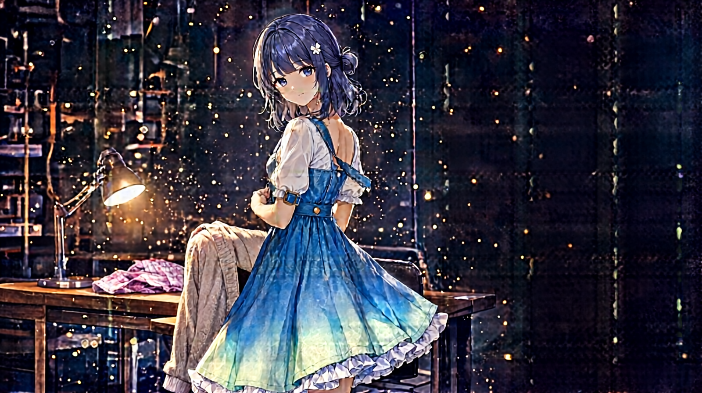
D:\workspace\dsh-default\qwen-image-2.1-tools\exp\galgame-cg-20260928\story-edited\10a-unhook.pngexp/galgame-cg-20260928/story-edited/10a-unhook.pngC:\Users\ashsu\Documents\black\gallery\story-edited\10a-unhook.png/gallery/story-edited/10a-unhook.png服装状态、扣环、台灯、开衫、粉裙都对；edit 只把表情从甜笑改得稍微收敛（仍有笑）。她把自己交出去的姿势，仍然是工作的姿势。
她背对我收拾衣架，台灯只照亮半间屋子。
暖暖那件裙已经叠好，压着一张写着地址的便签。
如果只做单线，这一幕不需要；10a 已经承担了同样的转折。
她背靠着落地镜，两条背带都滑到肘上。一只手撑在镜面上，另一只手还捏着那根布尺，尺子垂下来搭在大腿上。
她看的是镜中的我，不是她自己。
她抓着的还是那根量尺——那是她唯一的遮挡物。
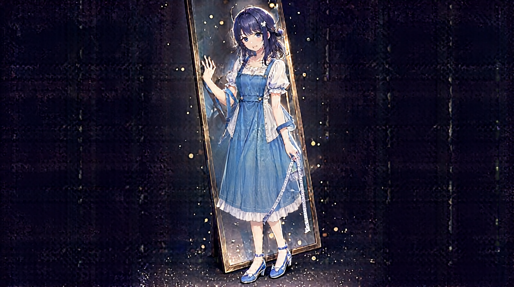
D:\workspace\dsh-default\qwen-image-2.1-tools\exp\galgame-cg-20260928\story-edited\11-mirror-adult.pngexp/galgame-cg-20260928/story-edited/11-mirror-adult.pngC:\Users\ashsu\Documents\black\gallery\story-edited\11-mirror-adult.png/gallery/story-edited/11-mirror-adult.png出图阶段被模型「净化」（衬衫没敞开、裙长变短），后期 edit 把三项都改到了，背带滑落／手撑镜面／垂下的布尺原样保住。代价：裙摆的「天蓝→薄荷绿」渐变被吃掉（keep 列表里漏了配色）。
她看着我，笑里带一点紧张。领口还没扣好。
她问的时候，我手机在震——是暖暖发来的：「堇姐我明天几点来试？」
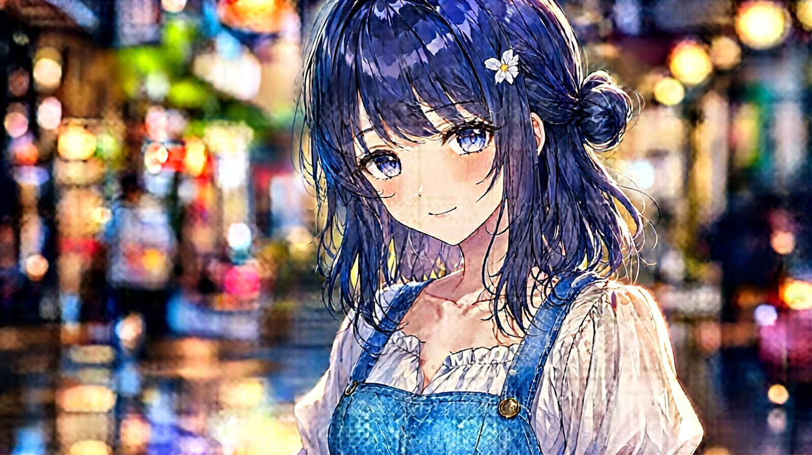
D:\workspace\dsh-default\qwen-image-2.1-tools\exp\galgame-cg-20260928\story-edited\12-closeup.pngexp/galgame-cg-20260928/story-edited/12-closeup.pngC:\Users\ashsu\Documents\black\gallery\story-edited\12-closeup.png/gallery/story-edited/12-closeup.png剧本要求「领口未扣好 + 锁骨上一道浅印」——身体已经答过了，她却偏要再听一次。edit 做到了，表情还自动变成带一点紧张的浅笑。
路灯下，她双手提着小购物袋，一只脚内撇。
她说完自己愣了一下。
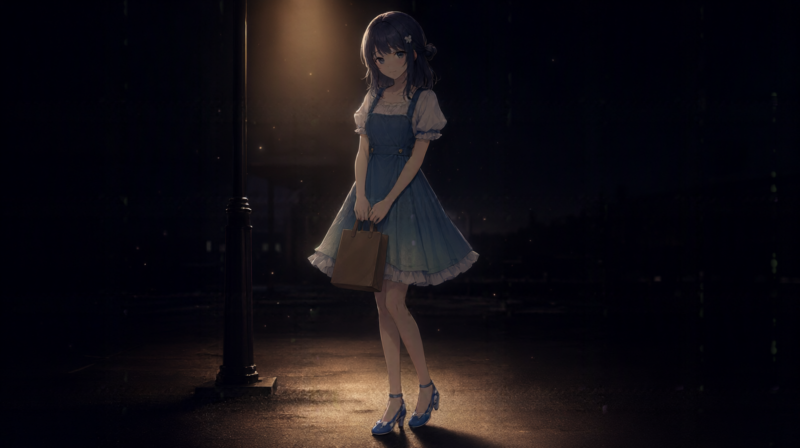
D:\workspace\dsh-default\qwen-image-2.1-tools\exp\galgame-cg-20260928\story-edited\13a-goodnight.pngexp/galgame-cg-20260928/story-edited/13a-goodnight.pngC:\Users\ashsu\Documents\black\gallery\story-edited\13a-goodnight.png/gallery/story-edited/13a-goodnight.png重出把夜压对了（灯下一小片暖光池、更深更饱和），但脸沉在阴影里；三个 seed 都改不掉（模型配光的稳定倾向），于是做了一次局部光照的 edit 把脸抬出来——没有重画，路灯/袋子/姿势/服装全保留。
第二天早上，工作台上摊着两件刚改好的衣服——一件是我的衬衫，一件是暖暖那件格纹裙。
两件胸口各别着一张手写便签。不用她当场回答，信是给人留时间的。
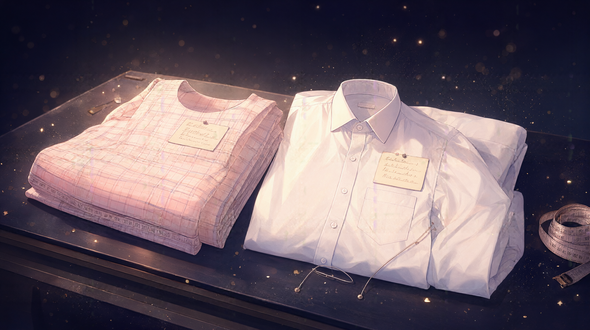
D:\workspace\dsh-default\qwen-image-2.1-tools\exp\galgame-cg-20260928\story\13b-note.pngexp/galgame-cg-20260928/story/13b-note.pngC:\Users\ashsu\Documents\black\gallery\story\13b-note.png/gallery/story/13b-note.png静态物构图，本机的强项区。是编辑推荐的结局。
工作室的木桌上，一张摊开的信纸，和一小截用剩的布尺。
桌角还压着暖暖那件裙子的下摆——「POETRY BLOOM」那行字正好从纸边露出来。
她替别人挑了那么多年，第一次有人替她把这一天挑好。
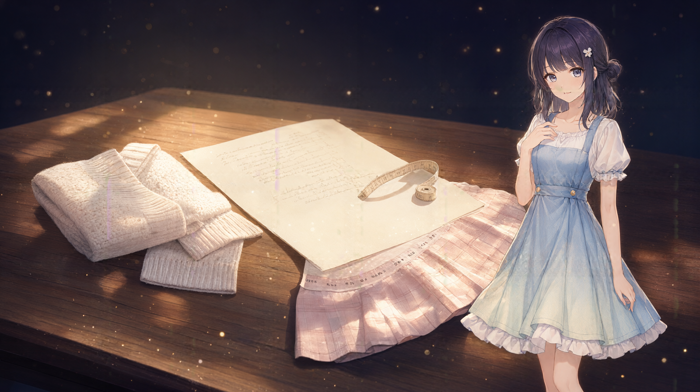
D:\workspace\dsh-default\qwen-image-2.1-tools\exp\galgame-cg-20260928\story\14-letter.pngexp/galgame-cg-20260928/story/14-letter.pngC:\Users\ashsu\Documents\black\gallery\story\14-letter.png/gallery/story/14-letter.png全篇唯一让「两件衣服同框」的镜头。 她替暖暖做的、她替自己留的，最后并排躺在同一张桌上。不用写一句话解释。